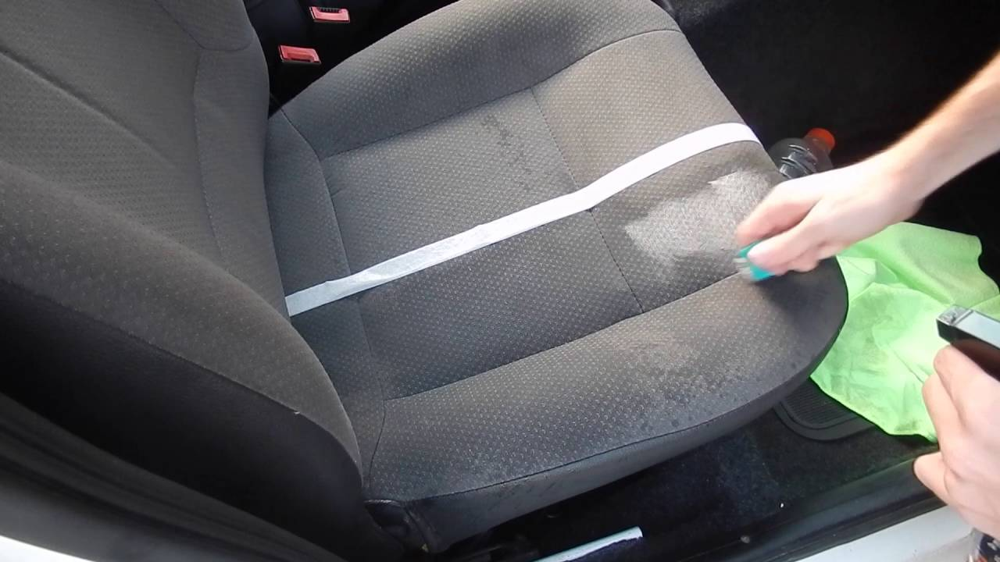

Nossos Serviços
Limpeza Profunda de Estofados
Descrição detalhada do processo de limpeza profissional que remove sujeira, manchas e odores dos estofados, utilizando técnicas e equipamentos especializados.

Remoção de Manchas Específicas
Destaque a capacidade de remover manchas específicas, como manchas de alimentos, bebidas, petróleo, tinta e outros tipos de sujeira difícil.
Higienização de Estofados de Tecido e Couro
Explicação sobre os métodos específicos de limpeza adequados para diferentes tipos de tecidos, incluindo tecidos delicados e estofados de couro, garantindo resultados excepcionais sem danificar o material.
Eliminação de Ácaros e Alérgenos
Informações sobre como o serviço de higienização pode ajudar a eliminar ácaros, bactérias e alérgenos dos estofados, proporcionando um ambiente mais saudável para você e sua família.

Proteção e Impermeabilização
Descrição dos serviços opcionais de proteção e impermeabilização para estofados, que ajudam a prolongar a vida útil dos móveis, repelir líquidos e prevenir manchas futuras.
Secagem Rápida e Sem Resíduos
Destaque a eficiência do processo de secagem rápido, que permite que os estofados sejam usados novamente em pouco tempo, sem deixar resíduos ou resquícios de produtos químicos.